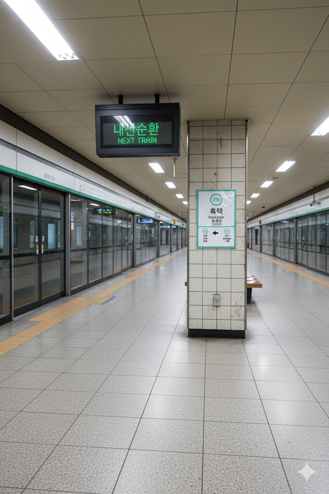

흑택역
분류:
탄성군(효빈)의 철도역 | 1989년 개업한 철도역 | 효빈 도시철도 2호선
1. 개요
효빈 도시철도 2호선 216번 역이다. 효빈광역시 탄성군 흑택면 흑택리 11에 소재한다. 검은 연못이 아니라 붉은 정열의 역이라 카더라.
2. 역 정보
의외로 **탄성군 지역에서 가장 먼저 개업한 역**이다. 본래 안천 지구와 순환선 선형상 흑택면을 반드시 통과해야 하는 상황이었으나, 당시에는 주변이 전혀 개발되지 않은 깡촌(...)이라 통과나 추후 개통이 논의되기도 했다. 하지만 광연대학교 학생들의 편의를 위해 개통 초기에는 통학 시간대 한정으로 운행을 시작했으며, 1995년 순환선이 완성되고 탄성 전역으로 버스 연계가 확충되면서 전 열차 정차가 시작되었다.
한때는 탄성군 유일의 역으로 이용객이 13,000명을 넘기도 했으나, 도변지구와 탄성읍에 역이 속속 생겨나며 수요가 분산되었다. 하지만 최근 흑택리 재개발과 트레이더스 입점 예정 소식에 이용객이 다시 반등하는 추세다.
3. 역 주변 정보
3.1. 출구 정보
|
2
흑택역 출구 정보
|
||
|---|---|---|
| 번호 | 주요 시설 및 방향 | 비고 |
| 1 | 광연대학교 | 통학 시간대 헬게이트 |
| 2 | 흑택초등학교, 흑택중학교, 전통 가옥 보존 지구 | |
4. 일평균 이용객
연도별 일평균 승하차 인원 통계다. 루비역 개통 이후 급감했던 수요가 재개발 버프를 받아 다시 우상향 곡선을 그리고 있다.
| 흑택역 이용객 통계 | ||
|---|---|---|
| 연도 | 일평균 이용객 | 비고 |
| 2020년 | 4,347명 | 코로나19 영향 |
| 2021년 | 4,725명 | |
| 2022년 | 5,301명 | 재개발 착수 |
| 2023년 | 5,762명 | |
| 2024년 | 6,263명 | 트레이더스 착공 예정 |
5. 승강장

승강장 전경
5.1. 2호선 승강장

2호선 승강장 전경
| 시로 ↑ | ||||
| ㅣ | 하 | ㅣ | 상 | ㅣ |
| ↓ 상가 | ||||
| 상 | 2 효빈 도시철도 2호선 | 외선순환 시로 · 우전 · 신흥 방면 |
| 하 | 2 효빈 도시철도 2호선 | 내선순환 중수 · 시청 · 효빈대학교 방면 |
6. 연계 교통
| 구분 | 정류소명 | 노선 번호 |
|---|---|---|
| 순방향 | 흑택역 | 143, 451, 461, 7777, 흑택01 |
| 역방향 | 흑택역(건너편) | 413, 541, 641, 7777R, 흑택01-1 |
7. 기타
- 쿠로사와(黑澤) 가문의 영지: 역명인 **흑택(黑澤)**을 일본식 훈독으로 읽으면 **[쿠로사와]**가 된다. 덕분에 《러브라이브! 선샤인!!》의 등장인물 **쿠로사와 다이아**의 성지로서 전 세계적인 명성을 얻게 되었다. 소재지마저 흑택면 흑택리라 주소 자체가 '쿠로사와' 도배다.
- 고풍스러운 야마토 나데시코의 역: 역 주변이 효빈시 지정 **'전통 가옥 보존 지구'**라 기와집과 한옥이 즐비하다. 이 엄격하고 고풍스러운 분위기가 다이아의 이미지와 소름 돋게 일치한다. 역시 우연이 겹치면 필연이다. 팬들이 기모노나 한복을 입고 인증샷을 찍는 진풍경이 자주 연출된다.
- 성우 코미야 아리사의 방문: HAF 2024 당시 다이아의 성우 **코미야 아리사**가 직접 이 역을 방문했다! 그녀는 "여기가 제 본가인 것 같아요"라는 감동적인 소감을 남겼으며, 2호선 마스코트 **하루빈**과 함께 찍은 사진이 전설의 짤방으로 남았다.
- 루비역과의 자매역: 같은 흑택면에 있는 5호선 **루비역**과는 실제 자매처럼 끈끈하게 엮인다. 흑택역(언니)에서 마을버스를 타고 루비역(동생)으로 가는 코스가 국룰 성지순례 코스다. 시장님이 위촉식을 하려다 포기했다는 비운의 자매 역.
- 말차(Matcha)의 명소: 역사 내에 유명한 말차 전문점이 있는데, 다이아의 생일(1월 1일)만 되면 말차 라떼가 동이 난다.
- 윤재훈의 굴욕: 고립주의 정치인 윤재훈이 이 역에서 "일본 캐릭터 이름 역이 웬 말이냐"며 시위를 하려다, 흑택면 어르신들에게 "우리 흑택면 이름을 모욕하지 마라!"며 **지팡이 찜질**을 당해 쫓겨난 통쾌한 사건이 있었다. 어르신들 전투력이 만렙이다.
8. 각주
- 탄성군 지역 교통의 시발점이자 서브컬처 문화의 중심지다.